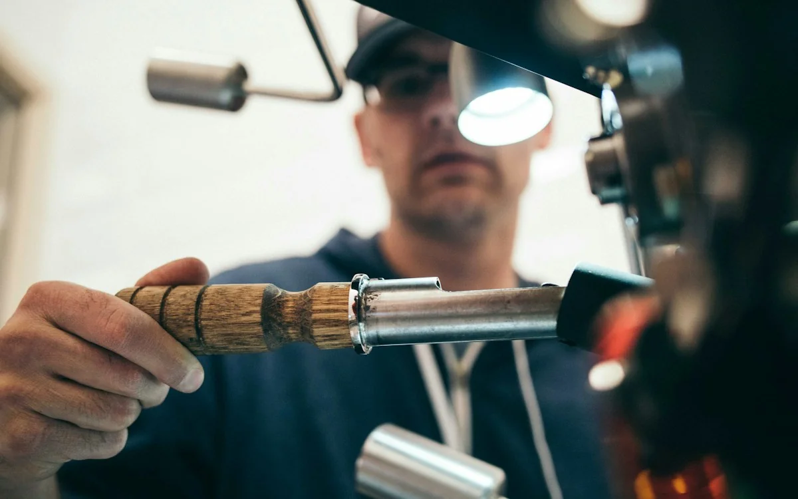
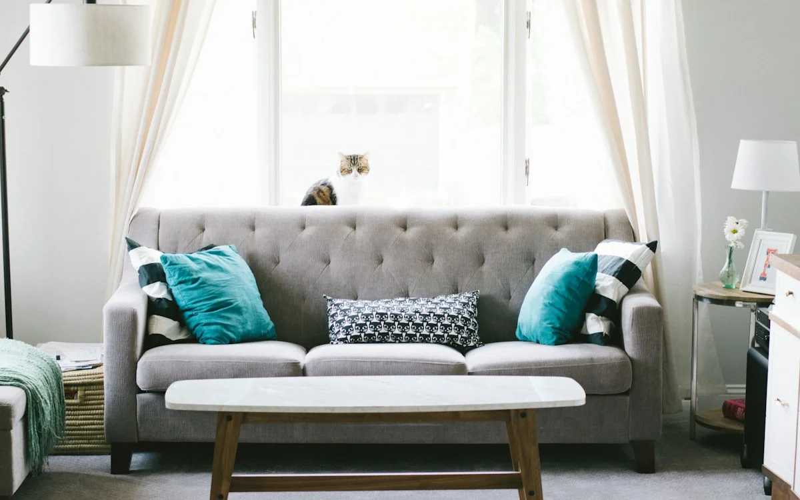
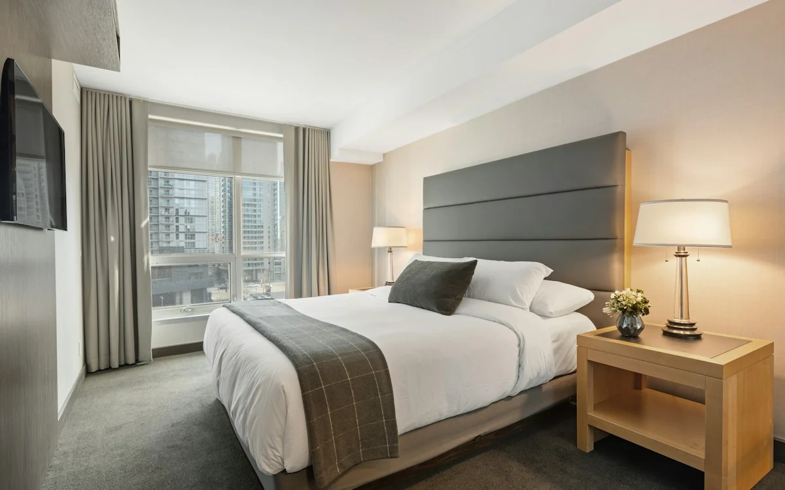
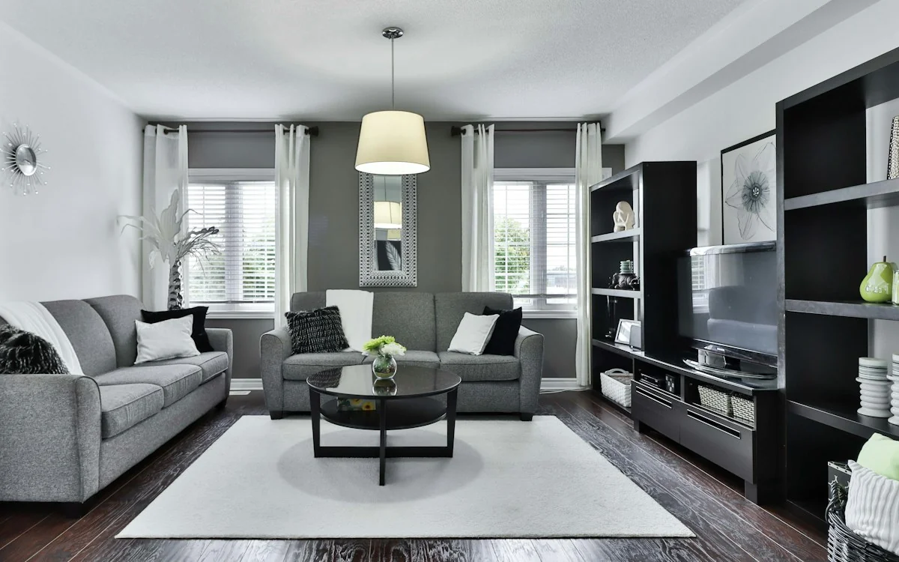
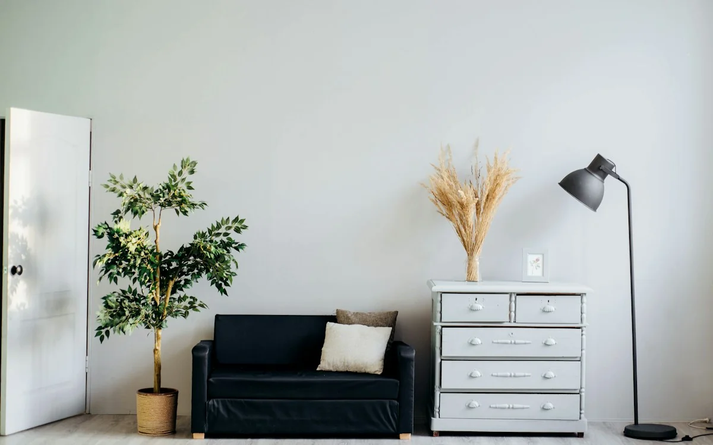
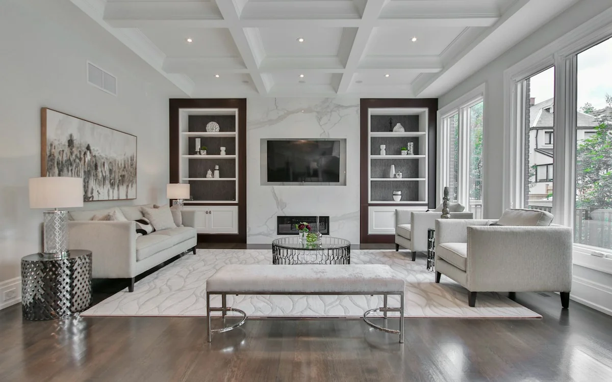
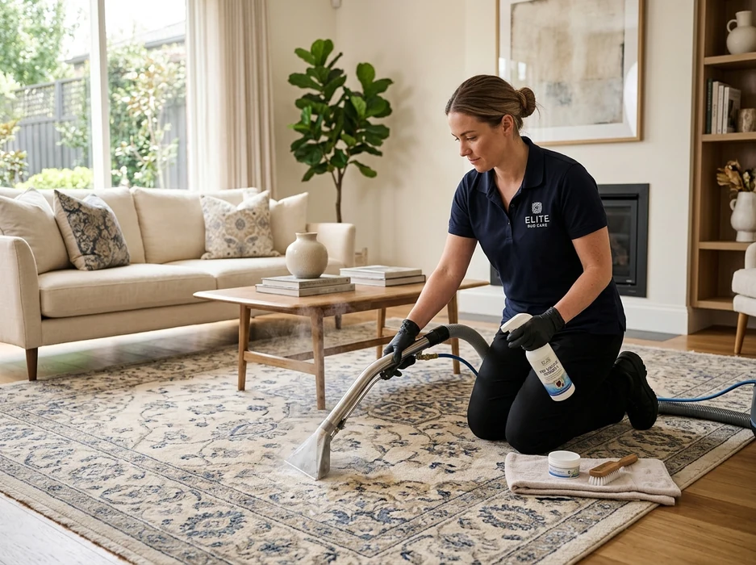
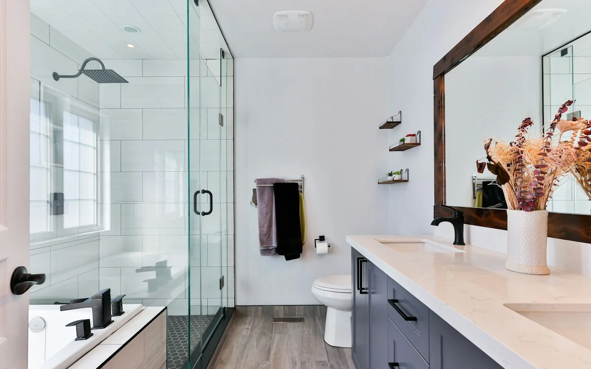
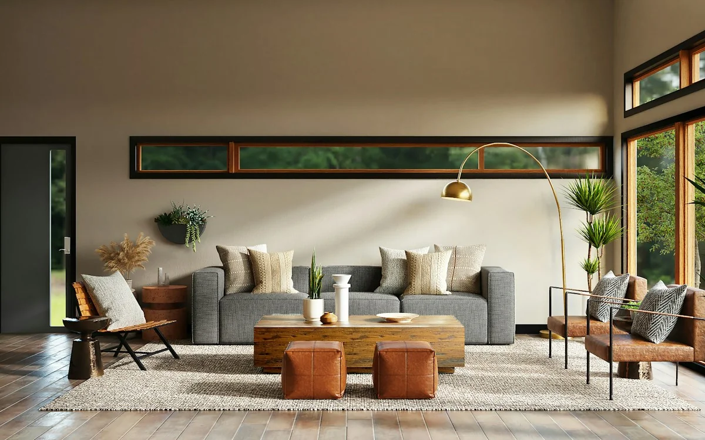
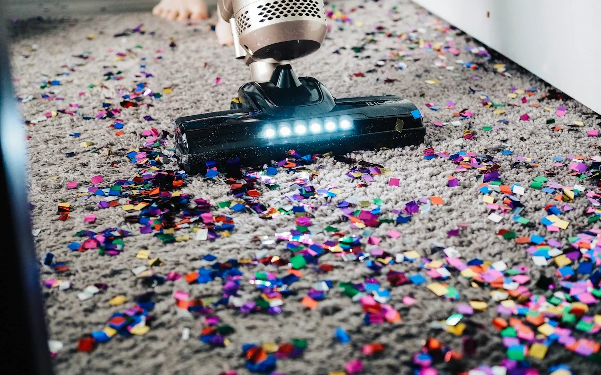

The FreshNest services catalogue
Clean fabrics, clearer choices.
Find the right treatment for your carpets, upholstery and everyday soft furnishings. Our technicians assess fiber type, existing damage and stain history before they choose a method. Starting prices are guides; your appointment quote reflects the actual size and condition.
Find your clean
12 servicesChoose a service that fits your space
Use the categories or search by surface, stain or treatment. Each service includes an overview, typical visit duration and the minimum starting charge.









No services match your search. Try a different term or choose All.
Before we begin
What fabrics can we clean?
The label and fiber content matter as much as the stain. Here is how we approach common materials, with testing and safe alternatives when extraction is unsuitable.
Synthetic carpet and microfiber
Polyester, nylon and many microfiber surfaces are often good candidates for controlled extraction. We test the color and backing, check shrinkage risks and avoid over-saturating the material.
Often suitable after testingCotton and linen blends
Natural blends can hold water, crease and show rings if over-wet. Care-code checks and a hidden-spot trial help us decide whether careful low-moisture cleaning is more appropriate.
Requires extra careWool and delicate rugs
Wool reacts differently to heat, alkalinity and agitation. We avoid routine high-temperature cleaning and recommend specialist rug cleaning for delicate dyes, fringe, silk or antique pieces.
Specialist assessmentLeather, velvet and dry-clean-only
Standard steam extraction is not suitable for every covering. We follow care labels and explain when a dedicated leather treatment, dry-cleaning process or external specialist is safer.
Method depends on labelKnow the difference
Professional extraction versus a DIY machine
Home machines can help between appointments. Professional care brings material checks, targeted pre-treatment and a careful drying plan for more complex jobs.
| What matters | FreshNest process | Typical DIY approach |
|---|---|---|
| Material assessment | Care codes, fiber testing and known damage checked first | Often depends on user's machine instructions |
| Spot treatment | Selected for stain history and tested on a hidden patch | General-purpose cleaning solution may be used |
| Soil extraction | Technician controls agitation, rinsing and recovery passes | Varies with equipment, technique and tank maintenance |
| Drying plan | Guidance based on material, moisture and ventilation | Often left to open windows or available fans |
| Risk management | Unsuitable fabrics referred to alternatives | Incorrect settings can cause overwetting or dye transfer |
Outcomes depend on fabric construction and stain age. Deep cleaning does not guarantee complete stain or odor removal.
Personalized care, without guesswork
Not sure which service to choose?
Tell us about your fabric, approximate size and the main concern. We will help identify a suitable treatment and explain how to prepare before the appointment.
Before your visit
Move small breakables away from the area, keep pets secure, and share photos of any fragile fabric or stain. Most suitable surfaces need roughly 4-6 hours to dry, depending on airflow and material.
After the visitOur team explains ventilation, foot traffic and how to report a concern under the 7-day re-clean policy.